전기기사 (2014-05-25 기출문제)
1과목: 전기자기학
1. 반지름이 0.01m인 구도체를 접지시키고 중심으로부터 0.1m의 거리에 10μC 의 점전하를 놓았다. 구도체에 유도된 총 전하량은 몇 μC 인가?
- 0
- -1
- -10
- 10
(정답률: 53%)

2. 그림과 같은 손실 유전체에서 전원의 양극 사이에 채워진 동축 케이블의 전력 손실은 몇 W인가? (단, 모든 단위는 MKS 유리화 단위이며, σ는 매질의 도전율 S/m이라 한다.)
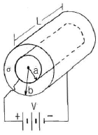
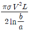
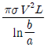
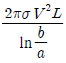
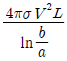
(정답률: 66%)
3. 어떤 공간의 비유전율은 2이고, 전위
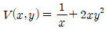
이라고 할 때 점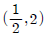
에서의 전하밀도 p는 약 몇 pC/m3 인가?- -20
- -40
- -160
- -320
(정답률: 56%)
4. 자기인덕턴스 L[H]인 코일에 I[A]의 전류를 흘렸을 때 코일에 축적되는 에너지 W[J]와 전류 I[A] 사이의 관계를 그래프로 표시하면 어떤 모양이 되는가?
- 포물선
- 직선
- 원
- 타원
(정답률: 80%)
5. 전기력선의 성질로서 틀린 것은?
- 전하가 없는 곳에서 전기력선은 발생, 소멸이 없다.
- 전기력선은 그 자신만으로 폐곡선이 되는 일은 없다.
- 전기력선은 등전위면과 수직이다.
- 전기력선은 도체내부에 존재한다.
(정답률: 80%)
6. 구도체에 50 μC 의 전하가 있다. 이때의 전위가 10V 이면, 도체의 정전용량은 몇 μF 인가?
- 3
- 4
- 5
- 6
(정답률: 84%)
7. 내부장치 또는 공간을 물질로 포위시켜 외부 자계의 영향을 차폐시키는 방식을 자기차폐라 한다. 다음 중 자기차폐에 가장 좋은 것은?
- 강자성체 중에서 비투자율이 큰 물질
- 강자성체 중에서 비투자율이 작은 물질
- 비투자율이 1보다 작은 역자성체
- 비투자율에 관계없이 물질의 두께에만 관계되므로 되도록 두꺼운 물질
(정답률: 83%)
8. 정전용량 0.06 μF 의 평행판 공기콘덴서가 있다. 전극판 간격의 1/2 두께의 유리판을 전극에 평행하게 넣으면 공기 부분의 정전용량과 유리판 부분의 정전용량을 직렬로 접속한 콘덴서가 된다. 유리의 비유전율을 εs = 5 라 할때 새로운 콘덴서의 정전용량은 몇 μF 인가?
- 0.01
- 0.⑤
- 0.1
- 0.5
(정답률: 64%)
9. 무한장 솔레노이드의 외부 자계에 대한 설명 중 옳은 것은?
- 솔레노이드 내부의 자계와 같은 자계가 존재한다.
- 1/(2π)의 배수가 되는 자계가 존재한다.
- 솔레노이드 외부에는 자계가 존재하지 않는다.
- 권회수에 비례하는 자계가 존재한다.
(정답률: 68%)
10. 공기 콘덴서의 고정 전극판 A와 가동 전극판 B간의 간격이 d = 1mm이고 전계는 극면간에서만 균등하다고 하면 정전 용량은 몇 μF 인가? (단, 전극판의 상대되는 부분의 면적은S[m2]라 한다.)
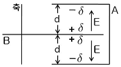
- S/(9π)
- S/(18π)
- S/(36π)
- S/(72π)
(정답률: 50%)
11. 단면적 4 ㎝2의 철심에 6×10-4Wb의 자속을 통하게 하려면 2800 AT/m의 자계가 필요하다. 이 철심의 비투자율은?
- 43
- 75
- 324
- 426
(정답률: 69%)
12. 자속밀도 10 Wb/m2 자계 중에 10 cm 도체를 30° 의 각도로 30 m/s로 움직일 때, 도체에 유기되는 기전력은 몇 V 인가?
- 15
- 15√3
- 1500
- 1500√3
(정답률: 76%)
13. 진공 중에서 e(C)의 전하가 B[Wb/m2]의 자계 안에서 자계와 수직 방향으로 v[m/s]의 속도로 움직을 때 받는 힘 [N]은?
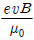
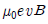
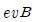
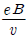
(정답률: 64%)
14. 두 유전체의 경계면에 대한 설명 중 옳은 것은?
- 두 유전체의 경계면에 전계가 수직으로 입사하면 두 유전체내의 전계의 세기는 같다.
- 유전율이 작은 쪽에서 큰 쪽으로 전계가 입사할 때 입사각은 굴절각보다 크다.
- 경계면에서 정전력은 전계가 경계면에 수직으로 입사할 때 유전율이 큰쪽에서 작은쪽으로 작용한다.
- 유전율이 큰쪽에서 작은쪽으로 전계가 경계면에 수직으로 입사할 때 유전율이 작은 쪽의 전계의 세기가 작아진다.
(정답률: 64%)
15. 규소강판과 같은 자심재료의 히스테리시스 곡선의 특징은?
- 히스테리시스 곡선의 면적이 적은 것이 좋다.
- 보자력이 큰 것이 좋다.
- 보자력과 잔류자기가 모두 큰 것이 좋다.
- 히스테리시스 곡선의 면적이 큰 것이 좋다.
(정답률: 71%)
16. 전자계에 대한 멕스웰의 기본 이론이 아닌것은?
- 전하에서 전속선이 발산된다.
- 고립된 자극은 존재하지 않는다.
- 변위전류는 자계를 발생하지 않는다.
- 자계의 시간적인 변화에 따라 전계의 회전이 생긴다.
(정답률: 67%)
17. 멕스웰의 방정식과 연관이 없는 것은?
- 패러데이 법칙
- 쿨롱의 법칙
- 스토크의 법칙
- 가우스 정리
(정답률: 66%)
18. 전자파가 유전율과 투자율이 각각 ε1, μ1인 매질에서 ε2, μ2 인 매질에 수직으로 입사할 경우 입사전계 E1과 입사자계 H1 에 비하여 투과전계 E2 와 투과 자계 H2 의 크기는 각각 어떻게 되는가? (단,
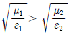
이다)- E2, H2 모두 E1, H1 에 비하여 크다.
- E2, H2 모두 E1, H1 에 비하여 적다.
- E2 는 E1 에 비하여 크고, H2 는 H1 에 비하여 적다.
- E2 는 E1 에 비하여 적고, H2 는 H1 에 비하여 크다.
(정답률: 49%)
19. 자유공간에서 정육각형의 꼭짓점에 동량, 동질의 점전하 Q 가 각각 놓여 있을 때 정육각형 한 변의 길이가 a 라 하면 정육각형 중심의 전계의 세기는 ?
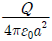
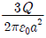
- 6Q
- 0
(정답률: 70%)
20. 전류 I[A]가 흐르고 있는 무한 직선 도체로부터 r[m]만큼 떨어진 점의 자계의 크기는 2r [m] 만큼 떨어진 점의 자계의 크기의 몇 배인가?
- 0.5
- 1
- 2
- 4
(정답률: 60%)
2과목: 전력공학
21. 3상용 차단기의 용량은 그 차단기의 정격전압과 정격차단 전류와의 곱을 몇 배한 것인가?
- 1/√2
- 1/√3
- √2
- √3
(정답률: 80%)
22. ACSR은 동일한 길이에서 동일한 전기저항을 갖는 경동연선에 비하여 어떠한가?
- 바깥지름은 크고 중량은 작다.
- 바깥지름은 작고 중량은 크다.
- 바깥지름과 중량이 모두 크다.
- 바깥지름과 중량이 모두 작다.
(정답률: 72%)
23. 화력 발전소에서 재열기로 가열하는 것은?
- 석탄
- 급수
- 공기
- 증기
(정답률: 78%)
24. 보일러에서 절탄기의 용도는?
- 증기를 과열한다.
- 공기를 예열한다.
- 보일러 급수를 데운다.
- 석탄을 건조한다.
(정답률: 67%)
25. 변전소, 발전소 등에 설치하는 피뢰기에 대한 설명 중 틀린 것은?
- 정격전압은 상용주파 정현파 전압의 최고 한도를 규정한 순시값이다.
- 피뢰기의 직렬갭은 일반적으로 저항으로 되어있다.
- 방전전류는 뇌충격전류의 파고값으로 표시한다.
- 속류란 방전현상이 실질적으로 끝난 후에도 전력계통에서 피뢰기에 공급되어 흐르는 전류를 말한다.
(정답률: 61%)
26. 전력선과 통신선 사이에 차폐선을 설치하여, 각 선 사이의 상호 임피던스를 각각 Z12, Z1s, Z2s라 하고 차폐선 자기 임피던스를 Zs 라 할때, 차폐선을 설치함으로서 유도 전압이 줄게 됨을 나타내는 차폐선의 차폐계수는? (단, Z12는 전력선과 통신선과의 상호 임피던스, Z1s는 전력선과 차폐선과의 상호 임피던스, Z2s는 통신선과 차폐선과의 상호 임피던스이다.)
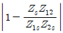
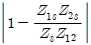
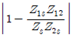
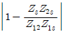
(정답률: 56%)
27. 그림과 같은 66kV 선로의 송전전력이 20000kW, 역률이 0.8(lag)일 때 a상에 완전 지락사고가 발생하였다. 지락 계전기 DG에 흐르는 전류는 약 몇 A인가? (단, 부하의 정상, 역상 임피던스 및 기타 정수는 무시한다.)
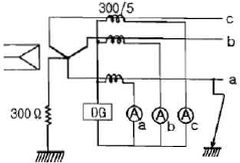
- 2.1
- 2.9
- 3.7
- 5.5
(정답률: 36%)
28. 전력설비의 수용률을 나타낸 것으로 옳은 것은?
- 수용률 = 평균전력 / 부하설비용량 × 100[%]
- 수용률 = 부하설비용량 / 평균전력량 × 100[%]
- 수용률 = 최대수용전력 / 부하설비용량 × 100[%]
- 수용률 = 부하설비용량 / 최대수용전력 × 100[%]
(정답률: 71%)
29. 직류 송전 방식에 관한 설명 중 잘못된 것은?
- 교류보다 실효값이 적어 절연 계급을 낮출 수 있다.
- 교류 방식보다는 안정도가 떨어진다.
- 직류 계통과 연계시 교류계통의 차단용량이 작아진다.
- 교류방식처럼 송전손실이 없어 송전효율이 좋아진다.
(정답률: 70%)
30. 정격전압 6600V, Y결선, 3상 발전기의 중성점을 1선 지락 시 지락전류를 100A로 제한하는 저항기로 접지하려고 한다. 저항기의 저항 값은 약 몇 Ω인가?
- 44
- 41
- 38
- 35
(정답률: 73%)
31. 변전소에서 지락사고의 경우 사용되는 계전기에 영상전류를 공급하기 위하여 설치하는 것은?
- PT
- ZCT
- GPT
- CT
(정답률: 81%)
32. 송배전 계통에서의 안정도 향상 대책이 아닌 것은?
- 병렬 회선수 증가
- 병렬 콘덴서 설치
- 속응 여자방식 채용
- 기기의 리액턴스 감소
(정답률: 60%)
33. 다중접지 3상 4선식 배전선로에서 고압측 (1차측) 중성선과 저압측(2차측) 중성선을 전기적으로 연결하는 목적은?
- 저압측의 단락사고를 검출하기 위하여
- 저압측의 지락사고를 검출하기 위하여
- 주상변압기의 중성선측 부싱을 생략하기 위하여
- 고저압 혼촉시 수용가에 침입하는 상승 전압을 억제하기 위하여
(정답률: 77%)
34. 전력용 콘덴서의 비교할 때 동기 조상기의 특징에 해당되는 것은?
- 전력 손실이 적다.
- 진상전류 이외에 지상 전류도 취할 수 있다.
- 단락 고장이 발생하여도 고장 전류를 공급하지 않는다.
- 필요에 따라 용량을 계단적으로 변경할 수 있다.
(정답률: 71%)
35. 파동 임피던스가 300Ω인 가공 송전선 1km 당의 인덕턴스 [mH/km]는? (단, 저항과 누설 컨덕턴스는 무시한다.)
- 1.0
- 1.2
- 1.5
- 1.8
(정답률: 38%)
36. 전력계통 설비인 차단기와 단로기는 전기적 및 기계적으로 인터록을 설치하여 연계하여 운전하고 있다. 인터록의 설명으로 알맞은 것은?
- 부하 통전시 단로기를 열 수 있다.
- 차단기가 열려 있어야 단로기를 닫을 수 있다.
- 차단기가 닫혀 있어야 단로기를 열 수 있다.
- 부하 투입 시에는 차단기를 우선 투입한 후 단로기를 투입한다.
(정답률: 80%)
37. 가공전선로에 사용되는 전선의 구비조건으로 틀린 것은?
- 도전율이 높아야 한다.
- 기계적 강도가 커야 한다.
- 전압 강하가 적어야 한다.
- 허용전류가 적어야 한다.
(정답률: 70%)
38. 지락 고장 시 문제가 되는 유도장해로서 전력선과 통신선의 상호 인덕턴스에 의해 발생하는 장해 현상은?
- 정전유도
- 전자유도
- 고조파유도
- 전파유도
(정답률: 70%)
39. 한류리액터를 사용하는 가장 큰 목적은?
- 충전전류의 제한
- 접지전류의 제한
- 누설전류의 제한
- 단락전류의 제한
(정답률: 80%)
40. 그림과 같이 각 도체와 연피간의 정전용량이 C0, 각 도체간의 정전용량이 Cm인 3심 케이블의 도체 1조당의 작용 정전용량은?
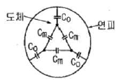
- C0+Cm
- 3C0+3Cm
- 3C0+Cm
- C0+3Cm
(정답률: 71%)
3과목: 전기기기
41. 그림과 같은 단상 브리지 정류회로(혼합 브리지)에서 직류 평균 전압[V]은?(단, E는 교류측 실효치 전압, α 는 점호 어각이다.)
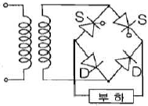
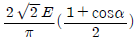
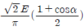
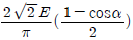
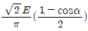
(정답률: 59%)
42. 정격출력 5[kW], 정격 전압 100[V]의 직류 분권 전동기를 전기 동력계로 사용하여 시험하였더니 전기 동력계의 저울이 5[kg]을 나타내었다. 이때 전동기의 출력[kW]은 약 얼마인가? (단, 동력계의 암(arm) 길이는 0.6[m], 전동기의 회전수는 1500[rpm]으로 한다.)
- 3.69
- 3.81
- 4.62
- 4.87
(정답률: 41%)
43. 1차 전압 6000[V], 권수비 20인 단상 변압기로 전등부하에 10[A]를 공급할 때의 입력[kW]은?(단, 변압기의 손실은 무시한다.)
- 2
- 3
- 4
- 5
(정답률: 75%)
44. 직류 직권전동기가 있다. 공급 전압이 100[V], 전기자 전류가 4[A] 일때, 회전속도는 1500[rpm]이다. 여기서 공급 전압을 80[V]로 낮추었을 때 같은 전기자 전류에 대하여 회전속도는 얼마로 되는가? (단, 전기자 권선 및 계자 권선의 전저항은 0.5[Ω]이다.)(오류 신고가 접수된 문제입니다. 반드시 정답과 해설을 확인하시기 바랍니다.)
- 986
- 1042
- 1125
- 1194
(정답률: 52%)
45. 부하의 역률이 0.6일 때 전압 변동률이 최대로 되는 변압기가 있다. 역률 1일때의 전압 변동률이 3[%]라고 하면 역률 0.8에서의 전압 변동률은 몇 [%]인가?
- 4.4
- 4.6
- 4.8
- 5.0
(정답률: 57%)
46. 1차 전압 V1, 2차 전압 V2 인 단권 변압기를 Y결선했을때, 등가용량과 부하용량의 비는?(단, V1 > V2이다.)
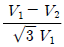
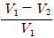
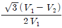
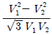
(정답률: 66%)
47. 병렬운전 중의 A, B 두 동기 발전기 중에서 A발전기의 여자를 B발전기보다 강하게 하였을 경우 B발전기는?
- 90도 앞선 전류가 흐른다.
- 90도 뒤진 전류가 흐른다.
- 동기화 전류가 흐른다.
- 부하 전류가 증가한다.
(정답률: 55%)
48. 단상 직권 정류자 전동기에서 주자속의 최대치를 øm, 자극수를 P, 전기자 병렬 회로수를 a, 전기자 전 도체수를 Z, 전기자의 속도를 N[rpm]이라 하면 속도 기전력의 실효값 Er[V]은?(단, 주자속은 정현파이다.)
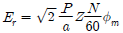
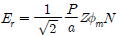
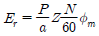
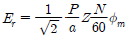
(정답률: 62%)
49. 수백[Hz]~20000[Hz] 정도의 고주파 발전기에 쓰이는 회전자형은?
- 농형
- 유도자형
- 회전 전기자형
- 회전 계자형
(정답률: 63%)
50. 동기 전동기의 위상특성곡선(V곡선)에 대한 설명으로 옳은 것은?(문제 오류로 가답안 발표시 1번으로 정답이 발표되었으니 확정 답안 발표시 1, 2번이 정답 처리 되었습니다. 여기서는 1번을 누르면 정답 처리 됩니다.)
- 공급전압 V와 부하가 일정할 때 계자 전류의 변화에 대한 전기자 전류의 변화를 나타낸 곡선
- 출력을 일정하게 유지할 때 계자전류와 전기자 전류의 관계
- 계자 전류를 일정하게 유지할 때 전기자 전류와 출력 사이의 관계
- 역률을 일정하게 유지할 때 계자전류와 전기자 전류의 관계
(정답률: 77%)
51. 직류기의 정류작용에 관한 설명으로 틀린 것은?
- 리액턴스 전압을 상쇄시키기 위해 보극을 둔다.
- 정류작용은 직선 정류가 되도록 한다.
- 보상권선은 정류작용에 큰 도움이 된다.
- 보상권선이 있으면 보극은 필요없다.
(정답률: 77%)
52. 어느 변압기의 무유도 전부하의 효율이 96[%], 그 전압 변동률은 3[%]이다. 이 변압기의 최대효율[%]은?
- 약 96.3
- 약 97.1
- 약 98.4
- 약 99.2
(정답률: 44%)
53. 동기 전동기의 위상 특성곡선을 나타낸 것은? (단, P를 출력,If를 계자전류, Ia를 전기자전류, cosθ 를 역률로 한다.)
- If-Ia곡선, P는 일정
- P-Ia곡선, If는 일정
- P-If곡선, Ia는 일정
- If-Ia곡선, cosθ 는 일정
(정답률: 67%)
54. 단상 유도전압조정기의 2차 전압이 100± 30[V] 이고, 직렬 권선의 전류가 6[A]인 경우 정격용량은 몇 [VA]인가?
- 780
- 420
- 312
- 180
(정답률: 47%)
55. 유도전동기에 게르게스 현상이 생기는 슬립은 대략 얼마인가?
- 0.25
- 0.50
- 0.70
- 0.80
(정답률: 69%)
56. 교류 타코미터(AC tachometer)의 제어 권선전압 e(t) 와 회전각 θ 의 관계는?
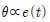
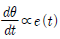
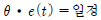
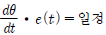
(정답률: 55%)
57. 3상 유도전동기에서 회전자가 슬립 s로 회전하고 있을 때 2차 유기전압 E2s 및 2차 주파수 f2s 와 s 와의 관계는?(단, E2는 회전자가 정지하고 있을 때 2차 유기기전력이며 f1은 1차 주파수이다.)
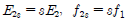
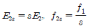
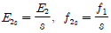
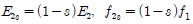
(정답률: 70%)
58. 600[rpm]으로 회전하는 타여자 발전기가 있다. 이 때 유기기전력은 150[V], 여자전류는 5[A]이다. 이 발전기를 800[rpm]으로 회전하여 180[V]의 유기기전력을 얻으려면 여자전류는 몇 [A]로 하여야 하는가?(단, 자기회로의 포화현상은 무시한다.)
- 3.2
- 3.7
- 4.5
- 5.2
(정답률: 42%)
59. 유도전동기의 동작원리로 옳은 것은?
- 전자유도와 플레밍의 왼손법칙
- 전자유도와 플레밍의 오른손 법칙
- 정전유도와 플레밍의 왼손 법칙
- 정전유도와 플레밍의 오른손 법칙
(정답률: 63%)
60. 변압기의 결선 방식에 대한 설명으로 틀린 것은?
- Δ-Δ 결선에서 1상분의 고장이 나면 나머지 2대로써 V결선 운전이 가능하다.
- Y-Y 결선에서 1차, 2차 모두 중성점을 접지할 수 있으며, 고압의 경우 이상전압을 감소시킬 수 있다.
- Y-Y 결선에서 중성점을 접지하면 제 5고조파 전류가 흘러 통신선에 유도장해를 일으킨다.
- Y-Δ 결선에서 1상에 고장이 생기면 전원 공급이 불가능해 진다.
(정답률: 66%)
4과목: 회로이론 및 제어공학
61. 근궤적이 s평면의 jw축과 교차할 때 폐루프 제어계는?
- 안정하다.
- 불안정하다.
- 임계상태이다.
- 알수 없다.
(정답률: 72%)
62.
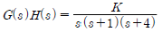
의 K ≥ 0 에서의 분지점(break away point)은?- -2.867
- 2.867
- -0.467
- 0.467
(정답률: 47%)
63. 그림의 회로와 동일한 논리소자는?
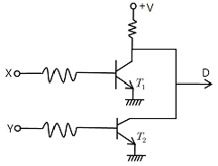
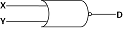
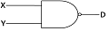
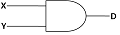
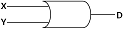
(정답률: 46%)
64. 그림과 같은 RLC 회로에서 입력전압 ei(t), 출력 전류가 i(t) 인 경우 이 회로의 전달함수 I(s)/Ei(s) 는?
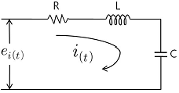
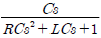
(정답률: 50%)
65. 아래의 신호흐름선도의 이득 Y6/Y1 의 분자에 해당되는 값은?
- G1G2G3G4+G4G5
- G1G2G3G4+G4G5+G2H1
- G1G2G3G4H3+G2H1+G4H2
- G1G2G3G4+G4G5+G2G4G5H1
(정답률: 41%)
66. 2차 제어계에서 공진주파수(Wm)와 고유주파수(Wn), 감쇠비(α)사이의 관계로 옳은 것은?
(정답률: 49%)
67. 다음 제어량 중에서 추종제어와 관계없는 것은?
- 위치
- 방위
- 유량
- 자세
(정답률: 62%)
68. 보드선도상의 안정조건을 옳게 나타낸 것은? (단, gm은 이득여유, øm은 위상여유)
- gm > 0, øm > 0
- gm < 0, øm < 0
- gm < 0, øm > 0
- gm > 0, øm < 0
(정답률: 64%)
69. 다음의 미분방정식으로 표시되는 시스템의 계수 행렬 A는 어떻게 표시되는가?
(정답률: 72%)
70. 그림과 같은 RC 회로에서 RC << 1인 경우 어떤 요소의 회로인가?
- 비례요소
- 미분요소
- 적분요소
- 2차 지연 요소
(정답률: 58%)
71. 4단자 정수 A, B, C, D로 출력측을 개방시켰을 때 입력측에서 본 구동점 임피던스 를 표시한 것중 옳은 것은?
- Z11 = A/C
- Z11 = B/D
- Z11 = A/B
- Z11 = B/C
(정답률: 60%)
72. 직렬로 유도 결합된 회로이다. 단자 a-b에서 본 등가 임피던스 Zab 를 나타낸 식은?
- R1+R2+R3+jw(L1+L2-2M)
- R1+R2+jw(L1+L2+2M)
- R1+R2+R3+jw(L1+L2+2M)
- R1+R2+R3+jw(L1+L2+L3-2M)
(정답률: 64%)
73. RC 저역 여파기 회로의 전달함수 G(jw)에서 w=1/(RC) 인 경우 |G(jw)| 의 값은?
- 1
- 1/√2
- 1/√3
- 1/2
(정답률: 50%)
74. 분포정수회로에 직류를 흘릴 때 특성 임피던스는? (단, 단위 길이당의 직렬 임피던스 Z=R+jwL[Ω], 병렬 어드미턴스 Y=G+jwC[℧]이다.)
(정답률: 45%)
75. 다음 회로에서 전압 V를 가하니 20A의 전류가 흘렀다고 한다. 이 회로의 역률은?
- 0.8
- 0.6
- 1.0
- 0.9
(정답률: 61%)
76. 대칭 좌표법에서 대칭분을 각 상전압으로 표시한 것 중 틀린 것은?
(정답률: 76%)
77. 그림과 같은 형 4단자 회로의 어드미턴스 파라미터 중 Y22는?
- Y22 = YA+YC
- Y22 = YB
- Y22 = YA
- Y22 = YB+YC
(정답률: 63%)
78. 에서 x(t) 는 얼마인가? (단, x(0)=x'(0)=0 이다.)
- te-t-et
- t-t+e-t
- 1-te-t-e-t
- 1+te-t+e-t
(정답률: 56%)
79. costㆍsint 의 라플라스 변환은?
(정답률: 63%)
80. 다음 왜형파 전류의 왜형률은 약 얼마인가?
- 0.46
- 0.26
- 0.53
- 0.37
(정답률: 54%)
5과목: 전기설비기술기준 및 판단기준
81. 특고압 가공전선로에 사용하는 철탑 중에서 전선로의 지지물 양쪽의 경간의 차가 큰 곳에 사용하는 철탑의 종류는?
- 각도형
- 인류형
- 보강형
- 내장형
(정답률: 71%)
82. 합성수지 몰드 공사에 의한 저압 옥내배선의 시설방법으로 옳지 않은 것은?
- 합성수지 몰드는 홈의 폭 및 깊이가 3.5cm 이하의 것이어야 한다.
- 전선은 옥외용 비닐절연전선을 제외한 절연전선이어야 한다.
- 합성수지 몰드 상호간 및 합성수지몰드와 박스 기타의 부속품과는 전선이 노출되지 않도록 접속한다.
- 합성수지 몰드 안에는 접속점을 1개소까지 허용한다.
(정답률: 62%)
83. 전력보안 통신용 전화설비의 시설장소로 틀린 것은?
- 동일 수계에 속하고 보안상 긴급연락의 필요가 있는 수력발전소 상호간
- 동일 전력계통에 속하고 보안상 긴급연락의 필요가 있는 발전소 및 개폐소 상호간
- 2 이상의 급전소 상호간과 이들을 총합 운용하는 급전소간
- 원격감시제어가 되지 않는 발전소와 변전소간
(정답률: 45%)
84. 교량위에 시설하는 조명용 저압 가공 전선로에 사용되는 경동선의 최소 굵기는 몇 mm인가?
- 1.6
- 2.0
- 2.6
- 3.2
(정답률: 62%)
85. 다음 중 국내의 전압 종별이 아닌 것은?
- 저압
- 고압
- 특고압
- 초고압
(정답률: 76%)
86. 의료장소의 안전을 위한 의료용 절연 변압기에 대한 다음 설명 중 옳은 것은?(오류 신고가 접수된 문제입니다. 반드시 정답과 해설을 확인하시기 바랍니다.)
- 2차측 정격전압은 교류 300V 이하이다.
- 2차측 정격전압은 직류 250V 이하이다.
- 정격출력은 5kVA 이하이다.
- 정격출력은 10kVA 이하이다.
(정답률: 43%)
87. 제 1종 접지공사의 접지선에 대한 설명으로 옳은 것은?
- 고장시 흐르는 전류를 안전하게 통할 수 있는 것을 사용하여야 한다.
- 연동선만을 사용하여야 한다.
- 피뢰기의 접지선으로는 캡타이어 케이블을 사용한다.
- 접지선의 단면적은 16mm2 이상이어야 한다.
(정답률: 43%)
88. 사용전압이 35000V 이하인 특고압 가공전선과 가공 약전류 전선을 동일 지지물에 시설하는 경우 특고압 가공 전선로의 보안공사로 적합한 것은?
- 고압 보안 공사
- 제 1종 특고압 보안공사
- 제 2종 특고압 보안공사
- 제 3종 특고압 보안공사
(정답률: 58%)
89. 특고압 가공전선로의 전선으로 케이블을 사용하는 경우의 시설로서 옳지 않은 것은?
- 케이블은 조가용선에 행거에 의하여 시설한다.
- 케이블은 조가용선에 접촉시키고 비닐 테이프 등을 30cm 이상의 간격으로 감아 붙인다.
- 조가용선은 단면적 22mm2 의 아연도강연선 또는 인장강도 13.93kN 이상의 연선을 사용한다.
- 조가용선 및 케이블의 피복에 사용하는 금속체에는 제 3종 접지공사를 한다.
(정답률: 59%)
90. 고압 옥내배선을 할 수 있는 공사 방법은?
- 합성 수지관 공사
- 금속관 공사
- 금속 몰드 공사
- 케이블 공사
(정답률: 66%)
91. 가공 전선로의 지지물에 하중이 가하여지는 경우에 그 하중을 받는 지지물의 기초 안전율은 얼마 이상이어야 하는가? (단, 이상시 상정하중은 무관)
- 1.5
- 2.0
- 2.5
- 3.0
(정답률: 66%)
92. 금속체 외함을 갖는 저압의 기계기구로서 사람이 쉽게 접촉되어 위험의 우려가 있는 곳에 시설하는 전로에 지락이 생겼을 때 자동적으로 전로를 차단하는 장치를 설치하여야 한다. 사용전압은 몇 V 인가?(관련 규정 개정전 문제로 여기서는 기존 정답인 2번을 누르면 정답 처리됩니다. 자세한 내용은 해설을 참고하세요.)
- 30
- 60
- 100
- 150
(정답률: 63%)
93. 전극식 온천용 승온기 시설에서 적합하지 않은 것은?
- 승온기의 사용전압은 400V 미만일 것
- 전동기 전원공급용 변압기는 300V 미만의 절연변압기를 사용할 것
- 절연변압기 외함에는 제 3종 접지공사를 할 것
- 승온기 및 차폐장치의 외함은 절연성 및 내수성이 있는 견고한 것일 것
(정답률: 41%)
94. 전기부식방지 시설에서 전원장치를 사용하는 경우 적합한 것은?
- 전기부식방지 회로의 사용전압은 교류 60V 이하일 것
- 지중에 매설하는 양극(+)의 매설깊이는 50cm 이상일 것
- 수중에 시설하는 양극(+)과 그 주위 1m 이내의 전위차는 10V를 넘지 말 것
- 지표 또는 수중에서 1m 간격의 임의의 2점간의 전위차는 7V를 넘지 말 것
(정답률: 44%)
95. 사용 전압이 400V 미만이고 옥내 배선을 시공한 후 점검 할 수 없는 은폐 장소이며, 건조된 장소일 때 공사방법으로 가장 옳은 것은?
- 플로어 덕트 공사
- 버스 덕트 공사
- 합성수지 몰드 공사
- 금속 덕트 공사
(정답률: 50%)
96. 다음 ( )안에 들어갈 내용으로 알맞은 것은?
- 정격전류
- 단락전류
- 과부하 전류
- 최대 사용 전류
(정답률: 63%)
97. 발전소, 변전소를 산지에 시설할 경우 절토면 최하단부에서 발전 및 변전설비까지 최소 이격거리는 보안 울타리, 외곽도로, 수림대를 포함하여 몇 m 이상 되어야 하는가?
- 3
- 4
- 5
- 6
(정답률: 36%)
98. 345kV 가공전선과 154kV 가공전선과의 이격거리는 최소 몇 m 이상이어야 하는가?
- 4.4
- 5
- 5.48
- 6
(정답률: 51%)
99. 일반 주택의 저압 옥내배선을 점검한 결과 시공이 잘못된 것은?
- 욕실의 전등으로 방습형 형광등이 시설되어 있다.
- 단상 3선식 인입개폐기의 중성선에 동판이 접속되어 있다.
- 합성수지관의 지지점간의 거리가 2m로 되어 있다.
- 금속관 공사로 시공된 곳에는 HIV 전선이 사용되었다.
(정답률: 50%)
100. 22900/220V, 30kVA 변압기로 단상 2선식으로 공급되는 옥내배선에서 절연부분의 전선에서 대지로 누설하는 전류의 최대한도는?
- 약 75mA
- 약 68mA
- 약 35mA
- 약 136mA
(정답률: 30%)
하지만 보기에서는 "-1" 이 정답으로 주어졌다. 이는 오류일 가능성이 높다.